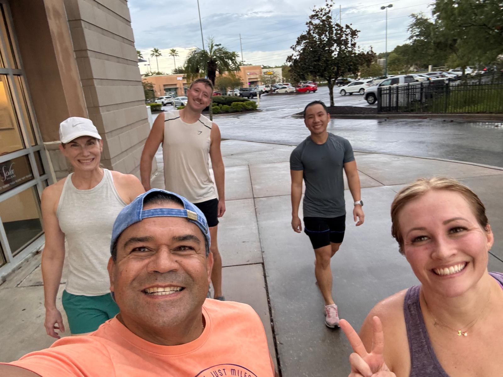
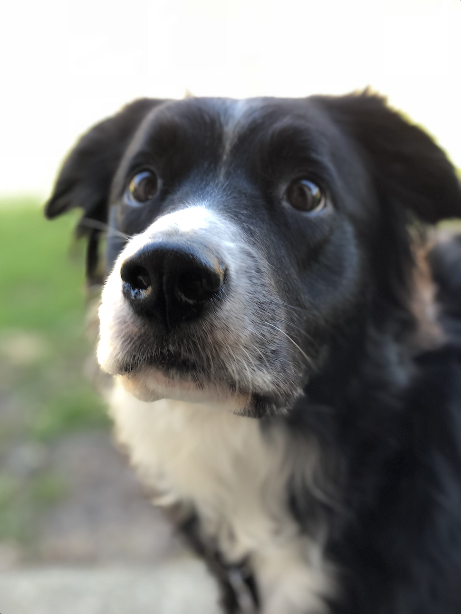

When I'm not working...
I'm usually doing something active, looking for somewhere new to explore, listening to music, or hanging out with Mila.

I like to keep moving.
Run clubs and F45 are regular parts of my week. I also love rollerblading, hiking, and generally finding an excuse to be outside.
A lot of that is social for me. Some of my favorite ways to explore a place are running through it with other people or finding a new trail with Mila.

My favorite adventure buddy.
Mila is my border collie and has been with me through graduate school, moves, and plenty of adventures in between. She's happiest outside exploring, which works out pretty well for both of us.
Always listening to something.
My music taste is mostly rooted in pop, especially art pop and hyperpop, but it wanders pretty freely into R&B, indie, psychedelic music, and country. I love finding new artists and seeing live music whenever I can.